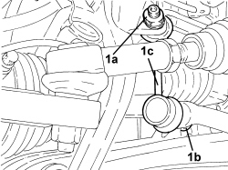
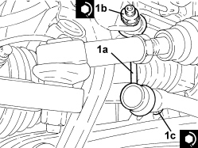

4410C12 FRONT SUSPENSION ANTI ROLL BAR JOINT (END) (ONE), LH OR RH - R.R
- Path
- Procedures > 44 SUSPENSION AND WHEELS > 4410 FRONT SUSPENSION > 4410C ANTI-ROLL BAR AND ANCHORAGE STRUTS > 4410C12 FRONT SUSPENSION ANTI ROLL BAR JOINT (END) (ONE), LH OR RH - R.R
- Kind
- repair procedure (removal / refitting; the operation number is the code)
- Applies to
- all engines; all production periods
- Interactive page
- https://sloeber94.github.io/elrnDB-aBrrSpdr/en/#/946002203
Applies to: all engines; all production periods
 Removing
Removing
 Refitting
Refitting- Position the vehicle on a lift.
Op. 4450B02 LEFT FRONT WHEEL - R.R
1. Undo the nuts (1a), (1b) and remove the front suspension anti-roll bar joint (1c).

Applies to: all engines; all production periods
Refitting
Removing1. Place the front suspension anti-roll bar joint in its housing and secure it tightening the nuts (1b) and (1c) to the recommended torque.
Component | Fastening | dia | Value (daNm) | Validity |
|---|---|---|---|---|
Front suspension anti-roll bar joint - fork side | Nut | M12 | 7.2 ÷ 8.8 |
Component | Fastening | dia | Value (daNm) | Validity |
|---|---|---|---|---|
Front suspension anti-roll bar joint - anti-roll bar side | Nut | M12 | 9.0 ÷ 11.0 |

Applies to: all engines; all production periods
Op. 4450B02 LEFT FRONT WHEEL - R.R
- Remove the vehicle from the lift.